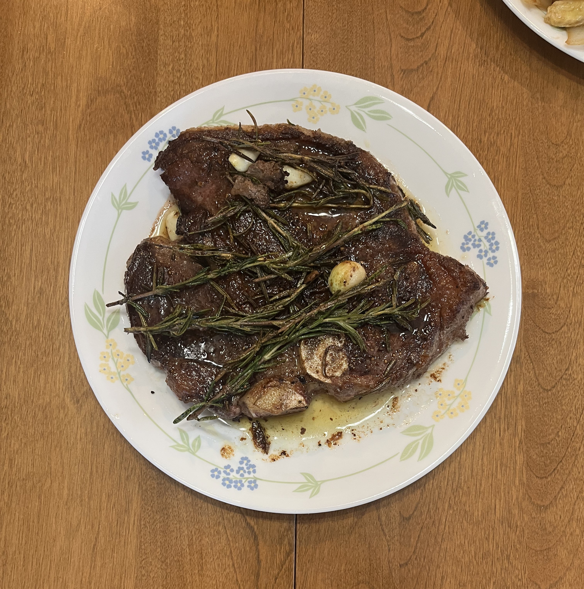

I've only just started experimenting with steaks. The method I've cooked them is with a cast iron skillet.
First heat up the skillet until it's smoking hot. Then add olive oil, just enough to fully coat the pan.
While waiting for pan to heat up, season both sides and edges of steak with salt and pepper. Use a generous amount - steak loses around 30% of seasoning in cooking process!
Place steak in pan. When placing, lay it away from you, so you don't get splashed with oil.
I cook the first side for about 6 minutes. This is where I like to add the garlic and rosemary too. I like to cook at medium high heat for this step.
I've learned it's best to keep movement of the steak to a minimum so I leave it there untouched, until it's time to flip.
After 6 minutes, flip and add butter to the pan.
Tilt the pan towards you so the melting butter is easily reached. Use a spoon and continuously splash the steak with the liquid butter.
When I flip the steak and start basting, I usually turn the heat down. The pan is already very hot and it's important to not burn the butter.
After 6 minutes of basting, the steak is done and is somewhere between a medium to medium rare. Allow the steak to rest for 10 minutes before cutting.
